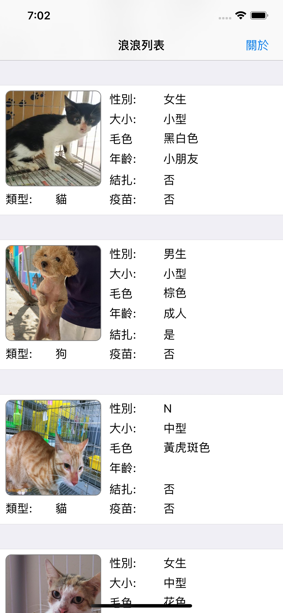
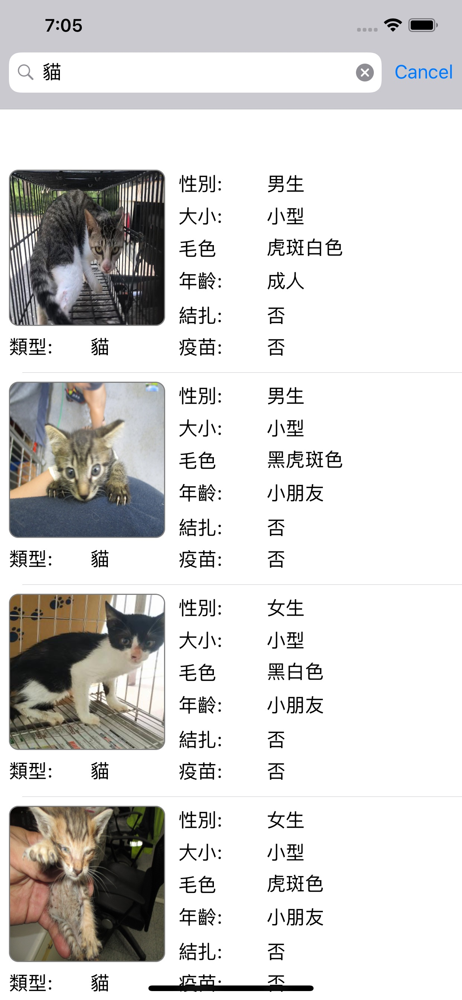
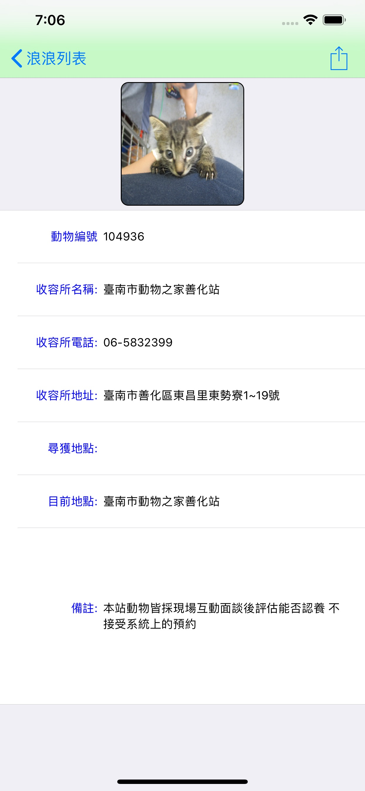

流浪動物平台 Stray Animals Platform
此App是一個讓您可以瀏覽收容於政府單位的流浪動物App。
本App資料取之於政府的資料開放平台(http://opendata.cwb.gov.tw/index)內的動物認領養。
目前讓使用者可以查詢動物的圖片，流水編號、區域編號、所屬縣市代碼、收容所代碼、實際所在地、類型、性別、體型、毛色、年紀、絕育狀態、施打狂犬病疫苗、尋獲地、資料備註收容所名稱。
本App不收費。
iOS App
螢幕截圖



App Store 連結
流浪動物平台 Stray Animals Platform
聯絡作者 / Contact me